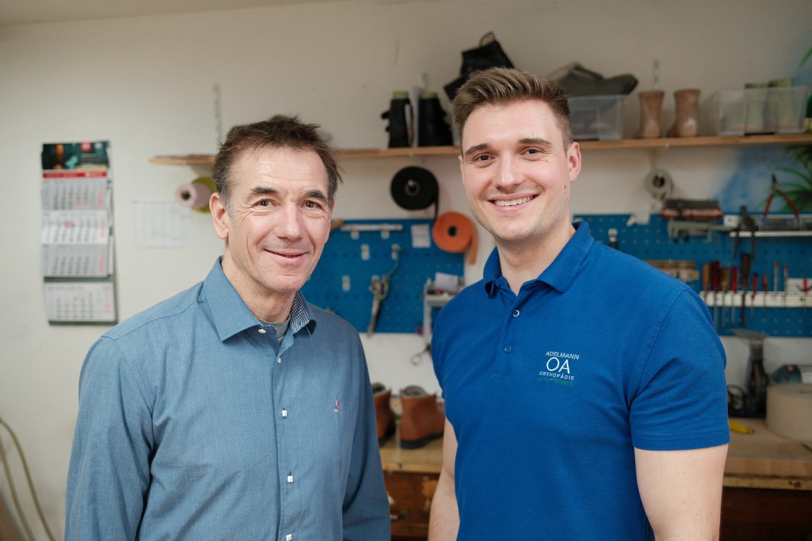

Klassischer Maßschuh
Elegant, langlebig, perfekt sitzend, von der Leistenanpassung bis zur Handnaht.

Vier Kernleistungen, eine Philosophie: Versorgung, die zu Ihrem Körper passt, nicht umgekehrt. Entwickelt und gefertigt in unserer eigenen Werkstatt.

Orthopädische Einlagen können Einfluß auf den gesamten Körper nehmen. Durch modernste Computertechniken verbunden mit handwerklichem Können korrigieren wir gegen die Belastungen des Tages.
Kommen Sie zu uns ins Geschäft und lassen Sie sich fachmännisch beraten. Unser gesamtes Wissen stellen wir Ihnen zur Verfügung. Ihre neuen Maßschuhe fertigen wir nach Ihren Vorstellungen.
Elegant, langlebig, perfekt sitzend, von der Leistenanpassung bis zur Handnaht.
Für besondere Anforderungen: bei Fehlstellungen, Beinlängendifferenz oder Versorgungsbedarf.
Berufsschuhe, Freizeitmodelle, Therapie- und Reha-Schuhe, individuell konzipiert.
Ob Schmetterlingsrolle, Ballenrolle, Sohlenranderhöhung oder Schuherhöhung: vieles ist bei uns möglich. Kommen Sie einfach zu uns ins Geschäft, wir beraten Sie bestmöglich.
Gezielte Abrollhilfen bei Belastungs- und Druckbeschwerden.
Ausgleich bei Fehlstellungen im Stand und Gang.
Präziser Ausgleich bei Beinlängendifferenz, unauffällig gearbeitet.
Mit modernen Analyseverfahren erkennen wir erste Anzeichen drohender Überlastungen und Fehlhaltungen frühzeitig. Anhand der Auswertung empfehlen wir die optimale Versorgung.
Millimetergenaue Erfassung der Fußgeometrie, Grundlage jeder individuellen Versorgung.
Wie verteilen sich Kräfte beim Stehen und Gehen? Unsere Messung macht es sichtbar.
Rufen Sie an oder schreiben Sie uns. Im persönlichen Gespräch finden wir die richtige Antwort.
Besuch planen →